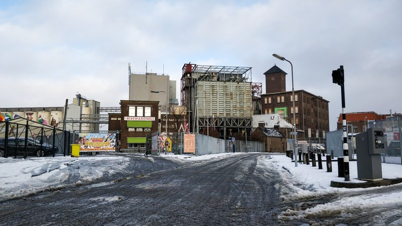
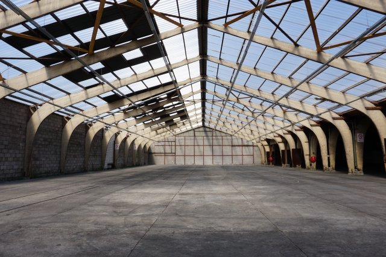

Rauwkerk
Verruim je geest met een beetje godslastering
- Dag
- vrijdag
- Begin
- 16:00
- Einde
- 00:00
- Dag
- zaterdag
- Begin
- 11:00
- Einde
- 00:00
- Soort
- Expo
- Locatie
- Buiten
- Plek
- Kaaijhal
Rauwkerk
Rauwkerk! Een plek waar spirituele ideeën samenkomen, maar geen een conservatief is. Laat ons je geest verruimen!
De creatievelingen van de kunstacademie AKV|St.Joost verzorgen voor jullie een speciale ervaring in de zogenaamde RAUWKERK, die onderdeel is van de expo Kernafval. Het is een bouwsel bestaande uit “kerkjes”, elk opgebouwd uit een ander materiaal.
Op deze kunstzinnige, duistere en religieuze plek kom je de volgende projecten tegen:
- Our Grave Denial:
Valérie Adriaensen maakt een VR-experience over de dood. Hier kun je zelf ervaren hoe is het om een lijk te zijn.
- Reflection
Met haar mysterieuze glas-in-lood werken, gecombineerd met bewegende projecties, laat Joëlla Verschoor je in verwondering achter.
- Anne Kipduif, Latifah Skenderovic en Floor Rebbers
maken een fantasierijke muurtekening geïnspireerd door spiritualiteit, die iedereen op het festival mee mag inkleuren! Dit gezamenlijke neonkleurige kunstwerk wordt belicht met blacklight, voor een extra trippy effect.
let op: dit kunstwerk kun je bewonderen op de toren van het festivalplein.
- Tarot voor Dummies
Daphne van Daelen trekt met haar zelf ontworpen Tarotkaarten “helderziendheid” in twijfel. Lees je eigen toekomst met deze kaarten, en kom erachter wat een onzin het is!
- Street Punq
Dylan van de Wal laat met zijn kleurrijke AR-kunstwerken een utopische toekomst zien waarin mens en technologie zijn samengesmolten. De mate waarin je je door middel van technologie kan laten perfectioneren, heeft overeenkomsten met het perfectionisme dat vaak in religies voorkomt.
Dus voor jouw portie festival-kunst ga je langs bij de RAUWKERK!
 Buiten
Buiten

Festivalhart Kaaijhal Mobiel Kas
De 80 muziekacts van RAUWKOST spelen binnen in 4 oude fabrieken. Maar als je van het ene naar het andere gebouw loopt, kom je langs muurschilderingen, installaties, beelden, foodtrucks lichtkunst en straatheater.

Het festivalterrein rondom de Tramkade is groot en heel divers en op zichzelf al de moeite waard om doorheen te lopen, maar desondanks zijn alle hoeken en gaten gevuld met een uitdagend programma.



Kaaijhal
In de Kaaijhal bouwen we met verschillende kunstenaars een gigantische interactieve expo waar je als bezoeker doorheen kunt reizen.
